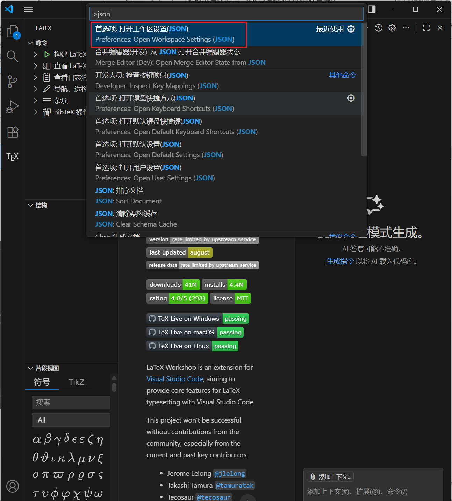
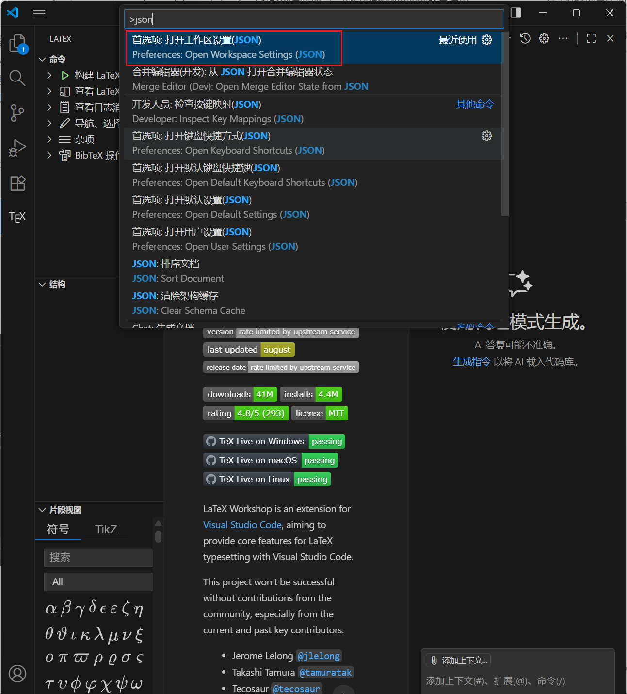

LaTeX的合作编写以及Github仓库的提交
前言
本文将展示一下内容
- 简单介绍LaTeX的各类发行版本及下载链接。由于官方下载网站较慢，在此附上各镜像网站地址。但此处不会展示其安装教程（像安装一般软件一样简单）。
- 个人的选择方向：本文会介绍
LaTeX的发行版及模板
Note在线LaTeX编辑器：https://www.overleaf.com overleaf 在线编写，无需配置环境，甚至可以协助。
Note
Note
Tip可能用到的工具 [LaTeX 公式编辑器] | [在线表格转latex格式 ]| [数学公式编辑器 ]
个人的选择
LaTeX撰写工具
目前用latex主要有几种方法如自带的texworks，网页在线版latex编辑器overleaf，本地编辑器texstudio和vscode。
overleaf在线合作编辑
本地编辑虽然有较高安全性，不易丢失等优点。但是，LaTeX写作是需要多人合作来完成的。如果成员不能在一起，那末，在线协作就成为了一个选择。
首先，我们来进行Overleaf的注册。Register - Overleaf, 在线LaTeX编辑器

注册完后，我们的项目就可以共享给他人（邮箱分享或者链接分享）

同时，也可以进行版本回退。

VSCode 的LaTeX配置
VScode 的Latex环境配置
由于自带的texworks年代久远UI难看直接排除，overleaf很不错但是由于文件存储在云而非本地总有些不安心，并且由于一系列原因使用overleaf编辑latex的用户越来越多，频繁出现崩了的情况，本地编辑器使用起来更让人放心。相较于texstudio，vscode的UI和代码块高亮更加清晰，而且可以更方便的使用git管理论文的tex代码。
Warning这里仅做技术展示。Github需要科学上网，并且此方法仅适合懂Git的人。VScode的配置和Github登录不再进行展示。
NoteVSCode： [【下载地址】](Visual Studio Code - Code Editing. Redefined)
VScode本质上是一个文本编辑器，所以电脑还需要安装TexLive环境.
安装完后，在VScode搜索 LaTeX Workshop 并安装
然后我们要对它进行配置
 


将内容替换为一下内容
|
|
这样，我们就配置好了VScode环境。
VsCode的Github仓库提交
Note本文可以作为代码提交github仓库的教程。
首先，一名成员创建了一个Github仓库。


然后 创建人 就可以直接提交内容了。


接下来就要添加合作人了。
创建人要邀请成员。


然后成员同意邀请。


添加成功后，成员就可以在这个仓库上随意提交了。
当然，有些创建者不希望成员随意更改，而是再自己检阅之后再提交。
这里我们可以为提交设置规则。


这样，成员每次提交都是创建了一个新的分支，需要创建者从pull request确认后提交。
具体确认教程与后面附录内容类似。
Github附录
GitHub的贡献者
如果我们没有被邀请来修改这个仓库，但我们浏览过程中发现的仓库中的错误，我们可以采取以下方法解决问题。
1.我们不能直接在原仓库上修改。我们需要把仓库fork为自己的仓库做修改。
2.修改完毕后，我们从自己的仓库中添加pull request 向原始仓库提交修改申请（如图）

3.接到申请后，作者可以查阅你对仓库文件做的修改。若无误，他可以合并分支，通过你的修改。
仓库的回退。
像overleaf的历史一样，提交错了，github也可以进行回退，如下图。


参考链接
如果有疑问，可以参考一下教程。